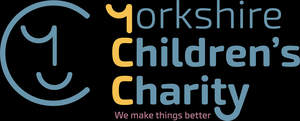

Trade Mark Journal No.2025/011 14 March 2025
UK00004165582 26 February 2025 (35,36,41)
Mark 1
Mark 2

- Class 35
- Arranging promotion of charitable fundraising events; Promotion of sports competitions and events; Promotion of goods and services through sponsorship of sports events; Promotion of special events; Promotion of goods and services through sponsorship of international sports events; Organisation of exhibitions and events for commercial or advertising purposes; Organization of events, exhibitions, fairs and shows for commercial, promotional and advertising purposes; Promotion services relating to esports events; Marketing services relating to esports events; Advertising services relating to esports events; Conducting of commercial events; Arranging and conducting of promotional events; Event marketing; Arranging and conducting of marketing events; Arranging and conducting of advertising events; Arranging and conducting marketing promotional events for others; Organisation of events for commercial and advertising purposes.
- Class 36
- Charitable fundraising by means of entertainment events; Charitable fundraising; Charitable fundraising through the sale of charity stamps; Financial sponsorship of sports events; Charitable fundraising services; Financial sponsorship of dance events; Financial sponsorship of theater events; Charitable fundraising services for underprivileged children; Financial sponsorship of cultural events; Organising of charitable collections; Organisation of charitable collections; Fundraising; Fund raising for charity; Financial sponsorship of visual arts events; Fundraising and sponsorship; Financial sponsorship of sporting activities; Fund-raising; Charitable collections; Collections (Charitable -); Fundraising services; Fundraising and financial sponsorship; Charitable fund raising services; Charitable fund raising; Fund raising (Charitable -); Fund raising for charitable purposes; Providing monetary grants to charities; Investment of funds for charitable purposes; Provision of charitable fundraising services in relation to carbon offsetting; Providing information relating to charitable fundraising; Fund sponsorship; Fund-raising services; Arranging charitable collections [for others]; Arranging fundraising; Fund raising services via crowdfunding website; Political fundraising; Fund raising services; Fund raising; Political fund-raising services; Arranging business fundraising activities; Political fundraising consulting; Raising of funds for financial purposes; Provident fund services; Organisation of collections; Collections (Organisation of -).
- Class 41
- Organisation of sporting events; Organisation of entertainment events; Organization of sporting events; Organisation of sporting events and competitions; Organising community sporting events; Organization of sporting events and competitions; Organising of sporting events; Organising sporting events; Organising of sports events; Organisation of cycling events; Organisation of educational events; Organization of entertainment events; Services for the organisation of sports events; Arranging and conducting of entertainment events for charitable fundraising purposes; Organisation of musical events; Organisation of sporting competitions and sports events; Ice-skating events (Organising of -); Organisation of cultural events; Organising of sports competitions and events; Organization of sporting events and competitions, involving animals; Services for the organisation of football events; Organization of dancing events; Organisation of esports events; Organising of football events; Organising of recreational events; Organisation of entertainment and cultural events; Arranging of sporting events; Sporting event organization; Provision of sporting events; Organising community cultural events; Arranging and conducting of sports events for charitable purposes; Organisation of automobile rallies, tours and racing events; Organization of cosplay entertainment events; Organising of sporting events, competitions and sporting tournaments; Organization of animal racing events; Organising events for entertainment purposes; Organizing community sporting and cultural events; Organising gymnastics events; Gymnastics events (Organising of -); Organising dancing events; Organisation of events for cultural, entertainment and sporting purposes; Organising of sports and sports events; Arranging and conducting of live entertainment events for charitable purposes; Organising of sports competitions and sports events; Organising of sports events and of sports competitions; Management of events for sporting clubs; Timing of sports events; Sports events (Timing of -); Organisation of vehicle racing events; Arranging and conducting of entertainment events for charitable purposes; Advisory services relating to the organisation of sporting events; Handicapping for sporting events; Organisation of galas; Conducting of sports events; Organising events for cultural purposes; Handicapping services for sporting events; Organisation of automobile racing events; Dance events; Production of sporting events; Ticket information services for sporting events; Entertainment services in the nature of sporting events; Arranging of educational events; Organising of motor racing events; Entertainment services relating to sporting events; Organization of events for cultural purposes; Conducting of live sports events; Organisation of sporting activities and competitions; Provision and management of sporting events; Arranging and conducting of educational events for charitable purposes; Conducting of entertainment events; Organisation of concerts; Ticket procurement services for sporting events; Arranging of cultural events; Booking of sports personalities for events (services of a promoter); Organizing cultural and arts events; Time recording services for sporting events; Organisation of sports events in the field of football; Providing facilities for sporting events, sports and athletic competitions and awards programmes; Organising of sporting activities and competitions; Organising of sporting activities or competitions; Organisation of stock car racing events; Organising of galas; Entertainment services in the nature of skating events; Conducting of educational events; Publication of calendars of events; Entertainment provided during intervals of sporting events; Production of sporting events for radio; Presentation of live entertainment events; Organising of sporting activities and of sporting competitions; Conducting of cultural events; Conducting of live entertainment events; Production of sporting events for television; Entertainment services in the nature of organizing social entertainment events; Organisation of sporting competitions; Production of sporting events for film; Arranging and conducting of sports events; Ticket information services for entertainment events; Musical events (Arranging of -); Arranging of musical events; Ticket information services for esports events; Organisation of outings for entertainment; Providing will-call ticket services for entertainment, sporting and cultural events; Providing facilities for sports events; Provision of recreational events; Organisation of conferences, exhibitions and competitions; Organisation of conferences related to entertainment; Organisation of sports tournaments; Organisation of festivals; Conducting of live esports events; Organisation of entertainment competitions; Fetes (Organisation of -) for entertainment purposes; Fetes (Organisation of -) for educational purposes; Organisation of roller-skating shows; Organisation of sports tuition; Organisation of competitions [education or entertainment]; Organisation of competitions (education or entertainment); Competitions (organisation of -) [education or entertainment]; Organisation of competitions for education or entertainment; Organisation of golf competitions; Organisation of music concerts; Fetes (Organisation of -) for recreational purposes; Organisation of roller-skating competitions; Fetes (Organisation of -) for cultural purposes; Organisation of educational shows; Organization of lotteries; Organisation of musical concerts; Organisation of ice-skating competitions; Organisation of games; Festivals (Organisation of -) for educational purposes; Organisation of sports competitions; Organisation of equestrian contests; Organisation of entertainment services; Organisation of tournaments; Organisation of competitions; Organization of education competitions; Services for the organisation of games; Services for the organisation of quizzes; Services for the organisation of competitions; Organisation of yachting competitions; Organisation of motorcycle rallies; Festivals (Organisation of -) for entertainment purposes; Organisation of fashion shows for entertainment purposes; Organization of competitions [education or entertainment]; Competitions (Organization of -) [education or entertainment]; Organization of competitions for education or entertainment; Organisation of football competitions; Organisation of golf tournaments; Organisation of balls; Organisation of shows; Production of esports events; Master of ceremony services for parties and special events; Production of live entertainment events; Arranging for ticket reservations for shows and other entertainment events; Booking of seats for entertainment events; Arranging and conducting of entertainment events; Ticket procurement services for entertainment events; Entertainment services in the nature of arranging social entertainment events; Organizing and conducting college athletic events; Special event planning; Arranging and conducting of educational events; Ticket reservation and booking services for education, entertainment and sports activities and events.
Charlotte Farrington